Last Updated:17/12/2020
| BRAND | DESCRIPTION | PRICE |
|---|---|---|
| 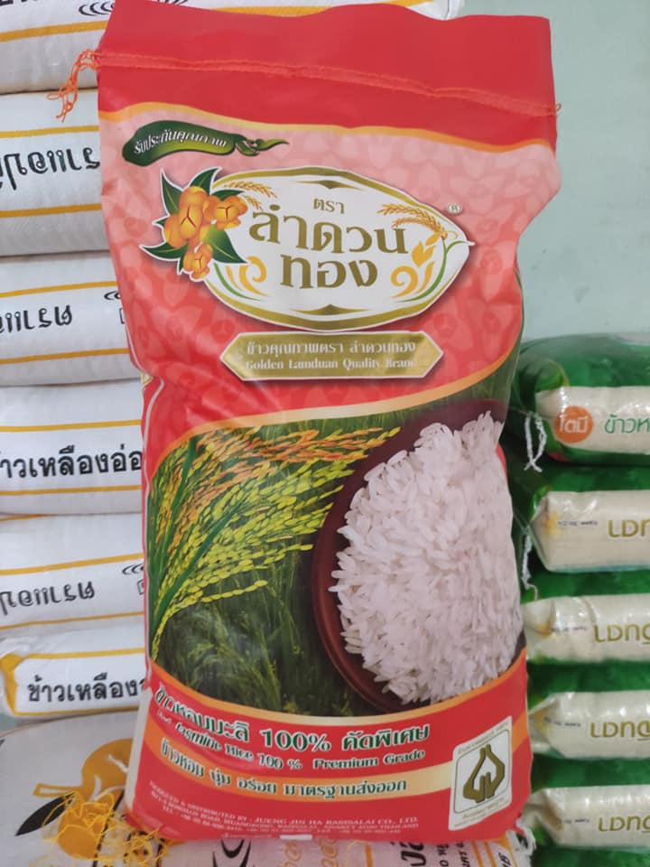 | The high-end grade jasmin rice. Golder Lumduan jasmin rice made from Srisakate province, where is famous in quality of rice production. | ★★★★★ |
| 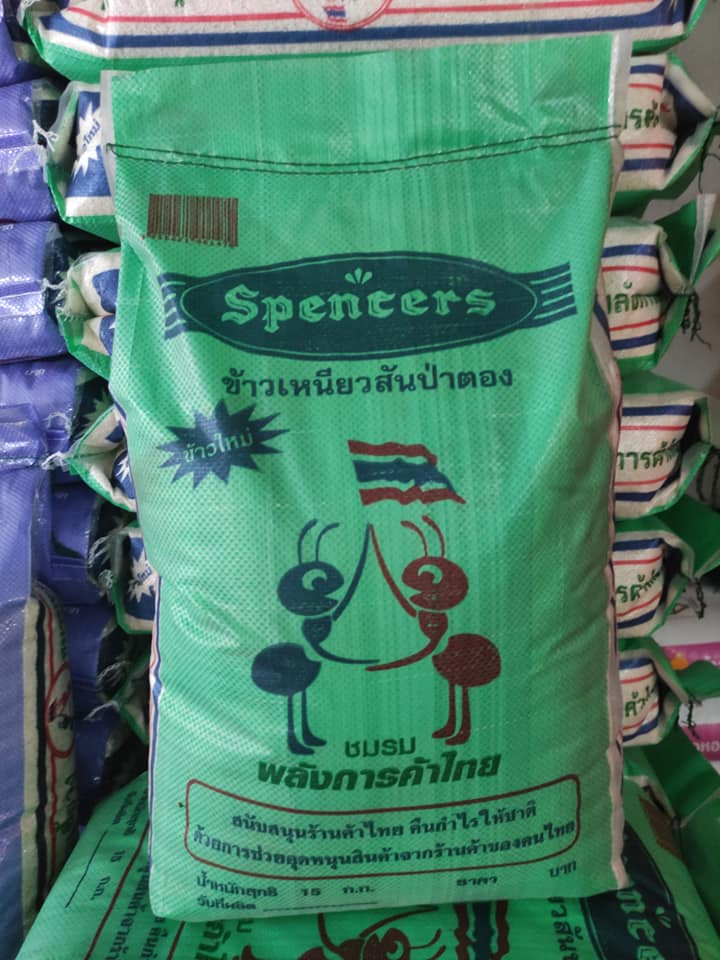 | The medium grade of sticky rice from Thai Trader Associate. Popular in north-east restaurant food. | ★★ |
| 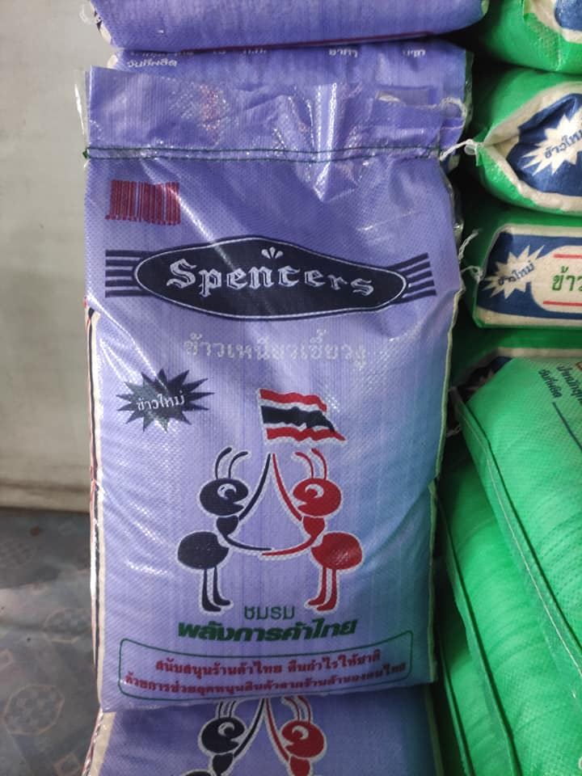 | The high-end grade of sticky rice also from Thai Trader Associate. The quality of this brand is better than the previous. | ★★★ |
| 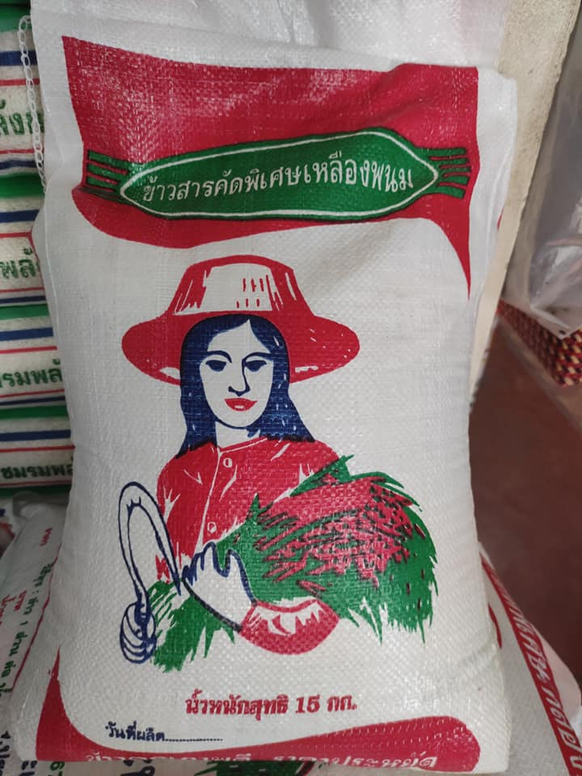 | The yellow Phanom rice, this brand is mixxed from several brand of rice in proper ratio. Garanteeded by many our customer. | ★★ |
| 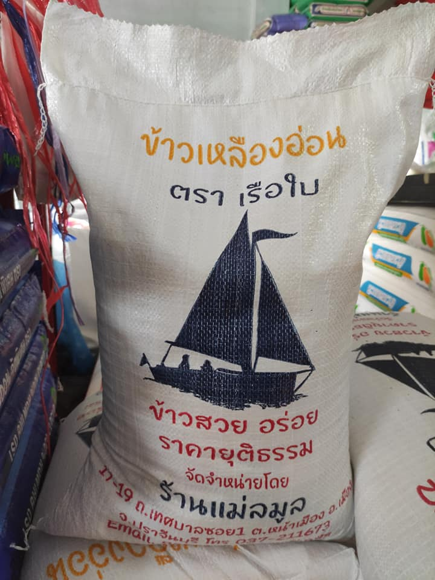 | The sailing boat is a brand-new rice but it grow in top-rank popular in short time. this brand made by the owner of this store who is a profressional rice seller more than 30 years. | ★★★ |
| 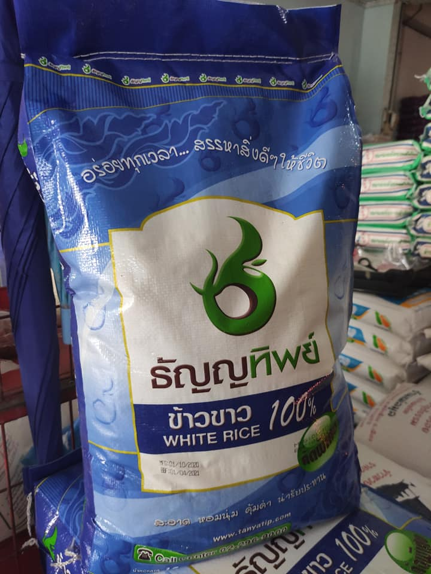 | The famous white rice from Tanyathip Inter Trade CO.,LTD. | ★★★ |
| 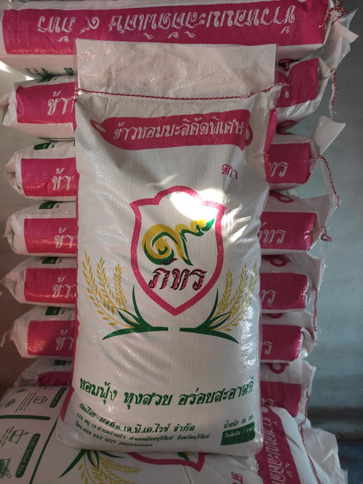 | N/A | ★★★ |
| 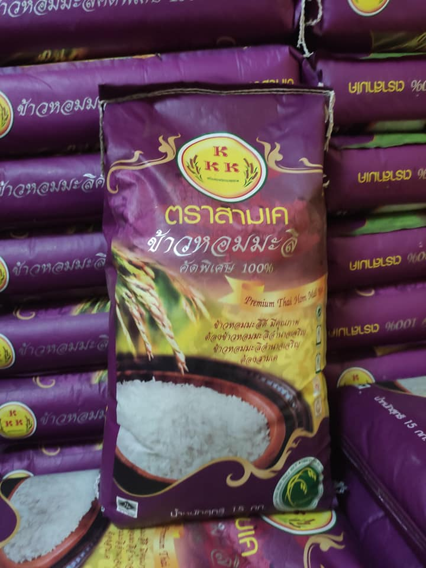 | This is the long-time brand name jasmin rice for Prachinburian. | ★★★★★ |
| 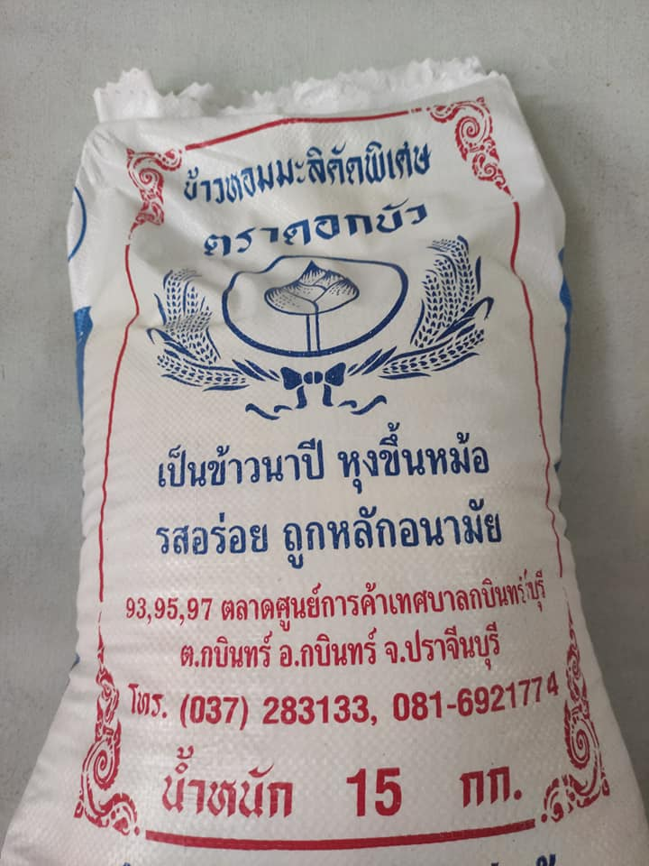 | N/A | ★★★ |
| 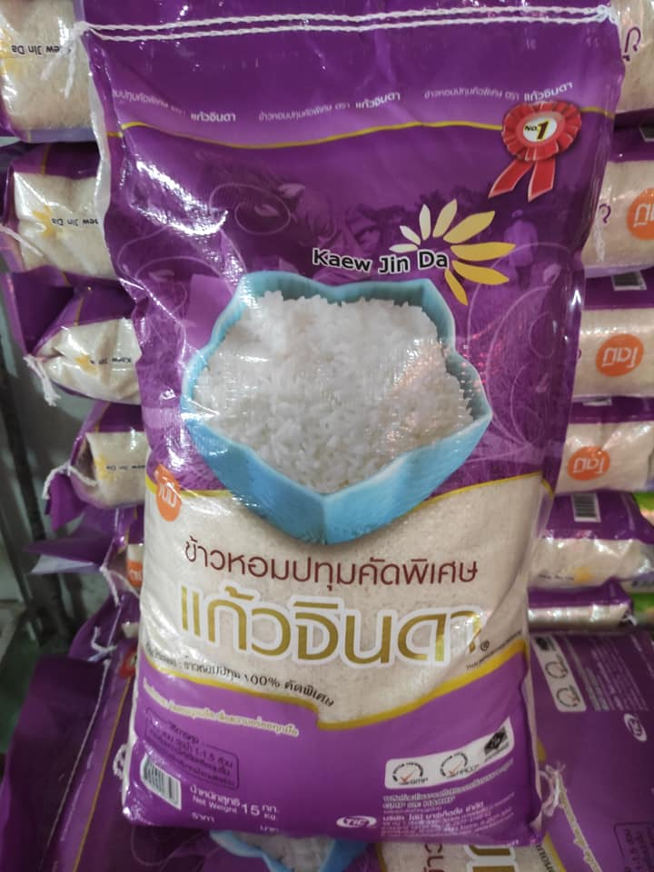 | The purple Keaw Jinda is a Phatum-jasmin rice. This brand is in Top-3 of best seller of our store. | ★★★ |
| 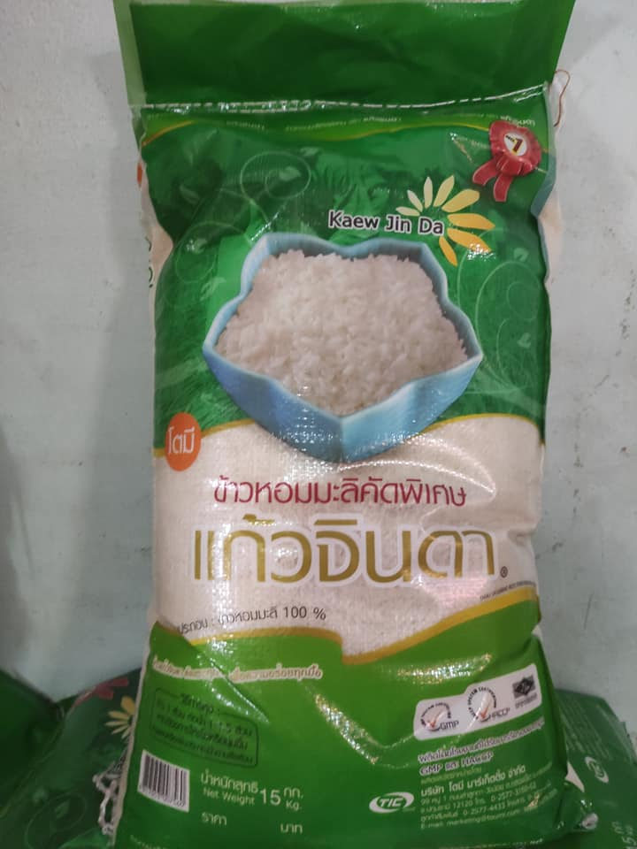 | The green Keaw Jinda is a well-chosen jasmin rice. This brand is in Top-3 of best seller of our store. | ★★★★ |